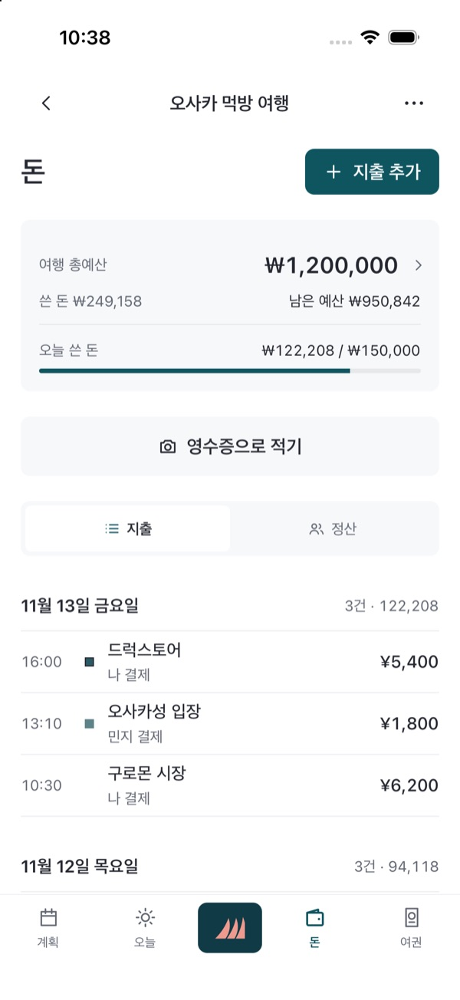
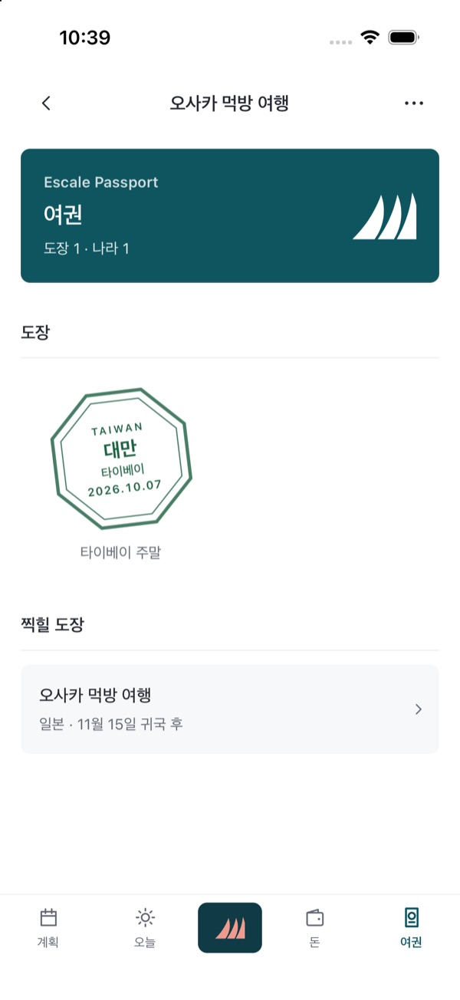

2026.07 ~ 진행 중 · 개인 프로젝트
Escale 여행 앱
여행 전에는 일정과 예약을, 여행 중에는 다음 일정과 남은 예산을, 다녀온 뒤에는 나라별 기록을 남기는 모바일 앱입니다. 로그인 없이 기기 저장소만으로 전체 흐름이 동작합니다.




iOS 시뮬레이터 캡처입니다. 화면의 여행과 지출은 테스트용 예시 데이터입니다.
해결하려는 문제
직접 오사카 여행을 준비하면서 시작했습니다. 일정은 메모 앱, 예약은 메일과 캡처, 길찾기는 지도 앱, 경비는 가계부에 흩어져 있어서, 여행 중에 "지금 어디로 가야 하고 돈은 얼마나 남았는지"를 바로 알기 어려웠습니다. 엔화로 쓴 돈을 원화로 바꿔 동행자와 나누는 정산도 여행이 끝난 뒤 다시 계산해야 했습니다.
오사카 여행용 개인 웹앱(Osaka Pocket)에서 시작해 여행 수첩 앱(Margin)을 거쳐 지금의 Escale이 됐습니다.
주요 시도
-
돈 계산에서 1원도 어긋나지 않게
금액은 최소 화폐 단위의 정수로 저장하고, 환율은 정수 분수로 계산해 마지막에 한 번만 반올림합니다. 나누고 남는 1원은 소수 부분이 큰 사람부터 배분해, 동행자별 분담의 합이 항상 전체 금액과 같게 했습니다.
-
여행지 시간대 기준으로 일정 다루기
일정을 여행마다 정한 IANA 시간대의 현지 시각으로 저장합니다. 시간대를 바꿔도 실제 시각은 유지되고, 서머타임 때문에 없거나 겹치는 시각은 다시 입력받습니다.
-
로그인 없이 쓰되 외부 API 비용은 막기
핵심 흐름은 기기 SQLite만으로 동작하고, 계정은 백업에만 씁니다. 로그인 없이 쓰는 장소 검색은 서버에서 IP별, 전체 하루 호출 한도를 두어 Google Places 비용이 늘어나지 않게 했습니다.
구조
- Expo / React Native
- SQLite 저장
- 영수증, 예약 글자 인식 (기기 안)
- Vercel Functions
- 호출 한도, 인증 확인
- Google Places, TypeSafe Jev
- Supabase (선택 백업)
- 앱
- Expo, React Native, TypeScript, expo-sqlite
- 공유 도메인
- 통화, 환율, 분담, 시간대, 예약 계산을 앱과 서버가 같은 코드로 사용
- 서버
- Vercel Functions. 장소 검색과 추천, 예약 문구 분석
- 데이터
- Supabase Auth, Postgres (선택적 계정, 백업, API 사용량 한도)
- 외부 정보
- Open-Meteo 날씨, Frankfurter 환율, Google 지도 길찾기
역할
- 기획, 설계, 구현, 테스트 전체 (1인)
- AI 코딩 도구를 활용하고, 작성 규칙과 검증 기준은 저장소 문서로 직접 관리
- 비공개 개발 저장소에서 커밋 약 350개로 진행하고, 공개 저장소에는 개인 자료를 뺀 스냅샷을 올림
보안과 데이터 경계
- Google, TypeSafe, Supabase 서비스 키는 서버에만 두고, 앱에는 공개 키만 넣습니다.
- 예약 문구를 서버로 보내기 전에 예약번호와 연락처로 보이는 부분을 가립니다.
- 날씨, 환율, 장소를 불러오지 못하면 추측값 대신 실패 상태를 보여 주고, 직접 입력과 외부 지도 길찾기로 이어 갈 수 있게 했습니다.
- 앱 이름과 화면 구조를 여러 번 바꾸는 동안에도 저장 형식과 DB 마이그레이션은 유지해, 기존 사용자의 데이터가 사라지지 않게 했습니다.
트러블슈팅
-
여행을 끝내지도 않았는데 여권 도장이 찍힘
귀국일이 지나기만 하면 도장이 자동으로 발급되고 있었습니다. 실패하는 테스트로 먼저 재현한 뒤, 사용자가 여행을 마쳤다고 확인하는 완료 상태를 추가했습니다. 여행과 나라 조합을 식별자로 삼아 앱을 다시 켜거나 날짜가 바뀌어도 한 번만 발급되게 했습니다.
-
저장에 실패해도 도장이 보임
저장이 끝나기 전에 화면에 도장과 알림을 먼저 띄우고 있었습니다. 읽기 전 쓰기, 쓰기 실패, 겹치는 쓰기를 각각 테스트로 막고, 저장이 성공한 뒤에만 도장을 보여 주며 실패하면 다시 시도할 수 있게 했습니다.
-
정산이 두 번 기록됨
오래된 장부를 기준으로 송금을 기록하거나 같은 송금이 중복으로 남을 수 있었습니다. 최신 장부를 기준으로 다시 검증하고 중복 기록을 막는 회귀 테스트를 추가했습니다.
검증
- 모바일 테스트 파일 66개, 테스트 722개 통과. TypeScript 타입 검사 통과
- iOS 시뮬레이터에서 여행 생성, 일정, 오늘, 지출, 동행자 분담과 송금, 정산 완료, 여권 도장 발급까지 한 흐름으로 확인. 앱을 다시 켠 뒤에도 데이터와 도장 1개가 유지되는 것 확인
- iOS, Android 번들 내보내기와 iOS 네이티브 빌드 성공
검증하지 못한 것과 다음 작업
- 실기기, 실제 외부 API를 연결한 화면, 영수증 카메라 인식, Android 실기기는 아직 확인하지 않았습니다.
- 스토어 배포 전입니다. 자동 테스트 통과를 출시 준비 완료로 보지 않습니다.
- 초대, 공동 편집 같은 함께 쓰는 기능은 다음 단계로 남겨 두었습니다.